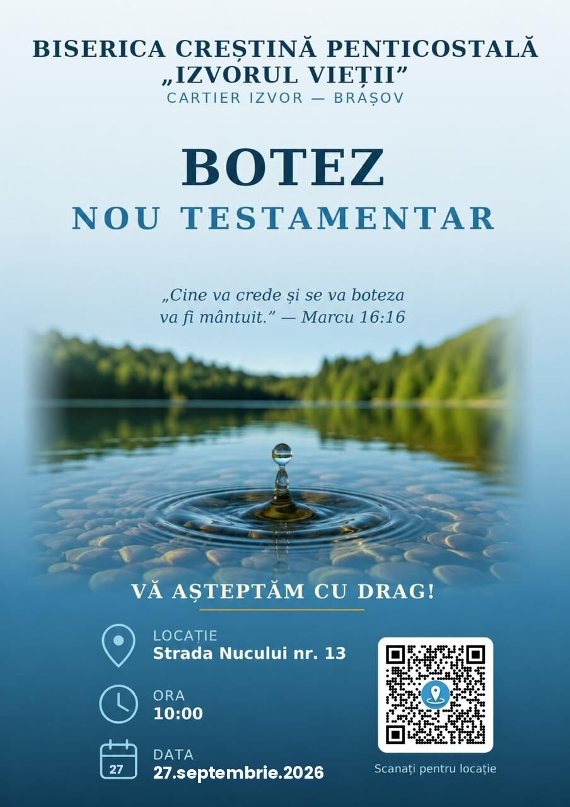

Te așteptăm la un nou Botez Nou Testamentar, un moment de sărbătoare pentru întreaga comunitate „Izvorul Vieții". Este ocazia în care cei care au crezut în Isus Hristos aleg să facă acest pas — mărturisirea publică a credinței lor prin botezul în apă.
„Cine va crede și se va boteza va fi mântuit." — Marcu 16:16
Vino să fii alături de noi, să ne rugăm împreună și să sărbătorim ce face Dumnezeu în viețile oamenilor.